PROJECT 11 / PORTFOLIO CHAPTER 6
其他设计
建筑、景观、室内、手绘与手工模型
汇集水乡人居竞赛、实习参与项目、室内与地域建筑课程、整合创新设计，以及手绘快题和实体模型。保留不同学习与实践阶段的工作线索，呈现从场地到构筑细节的设计探索。
- 设计类型
- 竞赛 · 课程 · 实习参与
- 项目时间
- 2021—2024
- 项目范围
- 多类型设计探索

01 / COMPETITION & PRACTICE
从水乡聚落到建筑改造
竞赛与实习项目呈现不同尺度的设计实践：一组关注江南水乡的人居与场地组织，另一组记录实习期间参与的建筑改造和室内展示工作。
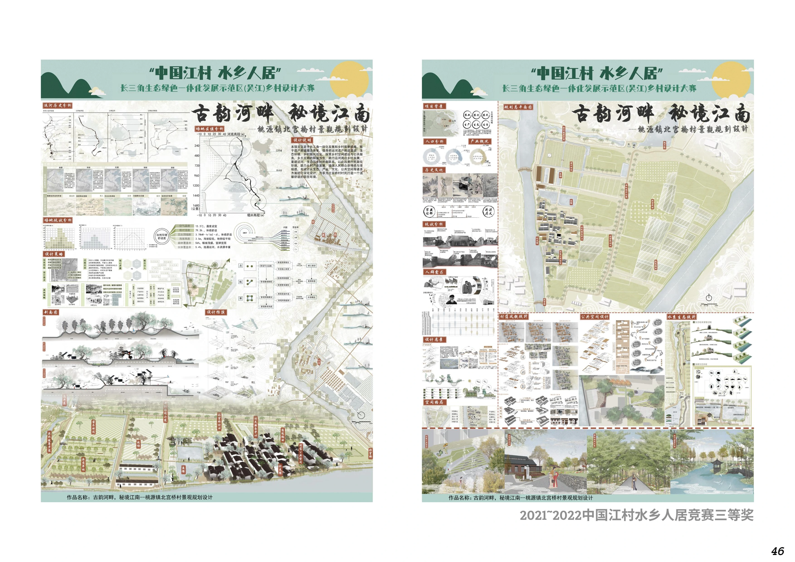
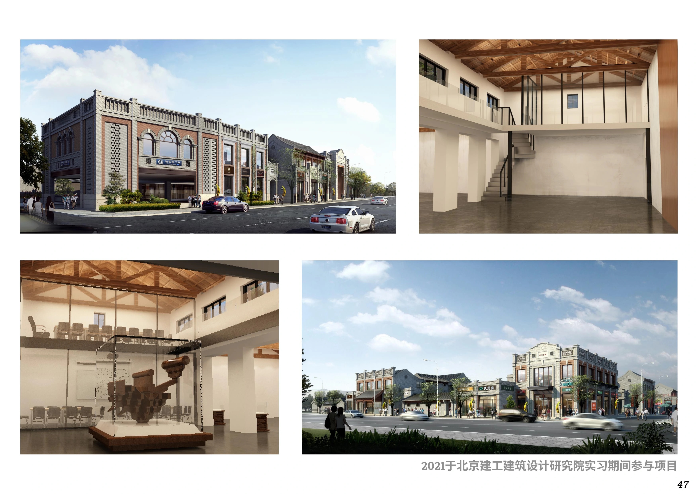
项目来源与参与性质沿用原作品集标注。
02 / COURSEWORK
空间氛围与地域表达
餐厅空间课程通过材质、照明、家具与陈列组织就餐体验；地域建筑课程则从场地、文化线索与体量生成展开。整合创新设计进一步联系空间、行为与系统。
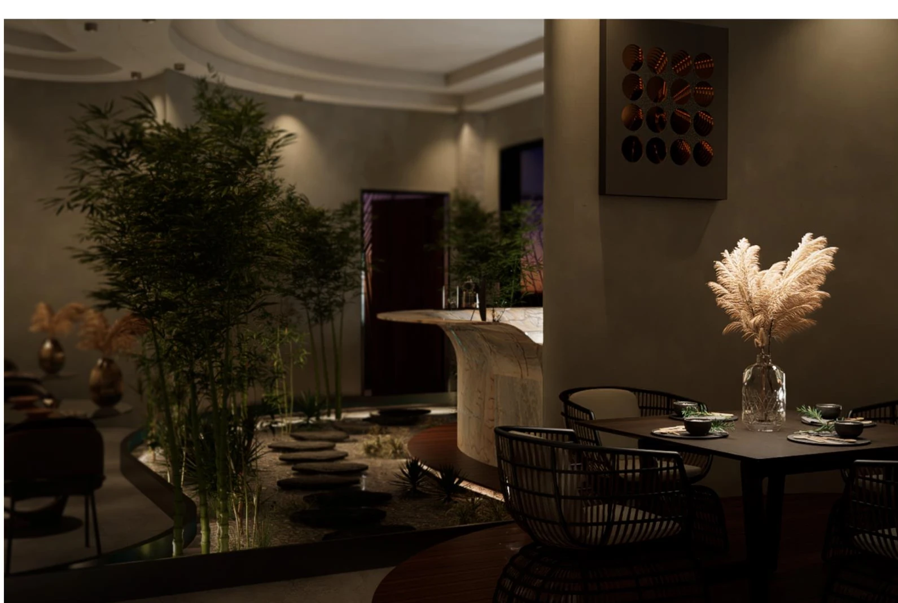
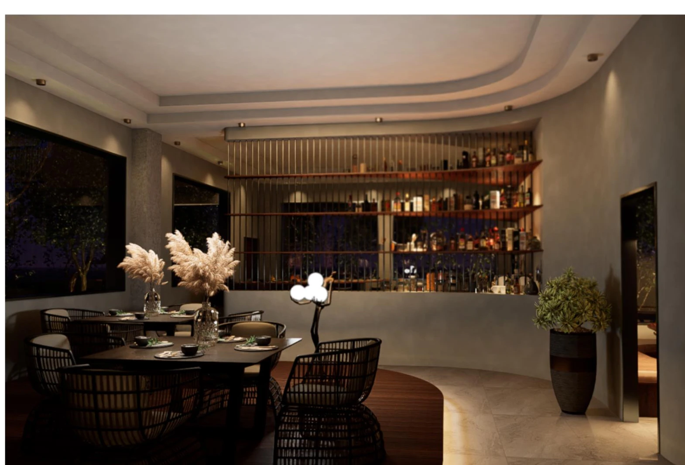
地域建筑与整合创新
保留原展板中的研究、推演与表达过程，展示课程之间的不同设计切入。
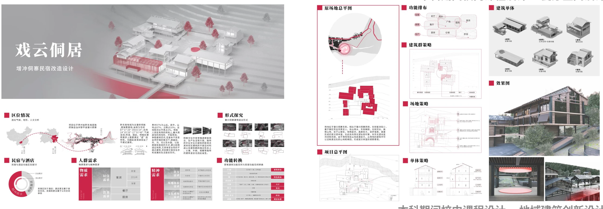
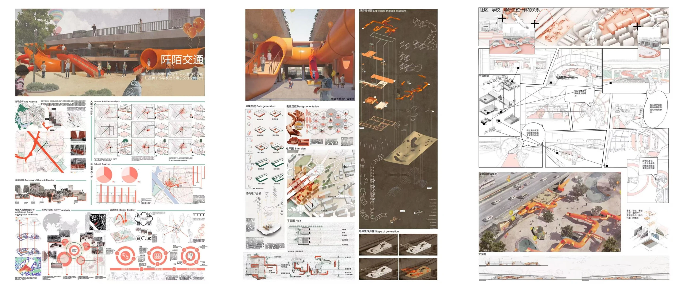
查看课程设计完整展板
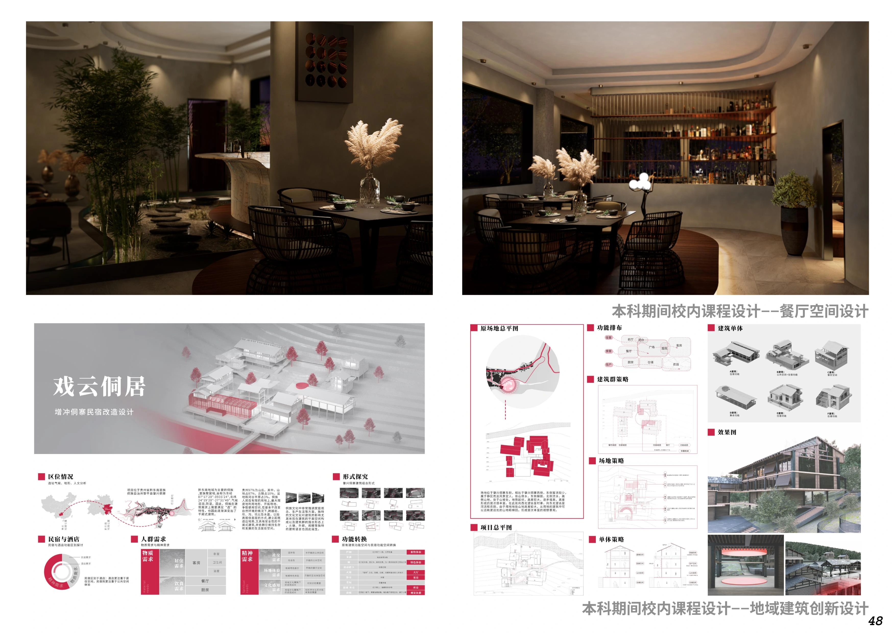
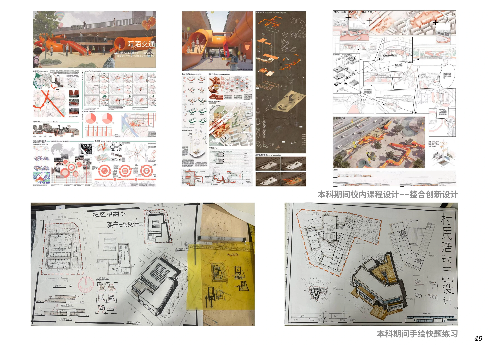
03 / DRAWING & MAKING
用手绘和模型推敲空间
手绘快题训练在有限时间内组织场地、平面和空间表达；实体模型将体量、结构与材料连接起来，在制作中检验比例和构成关系。
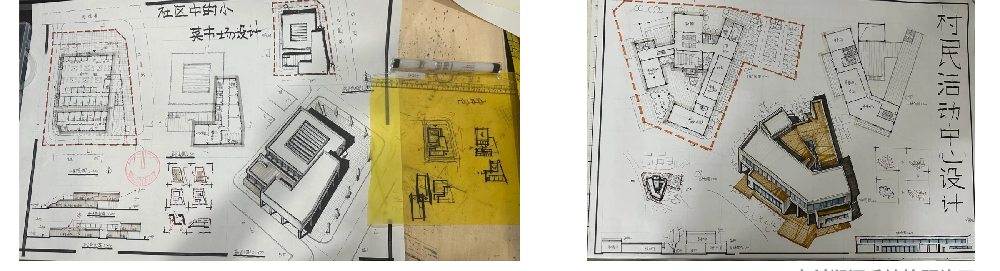
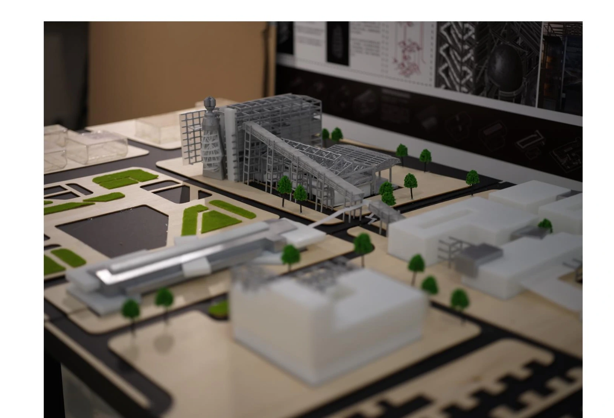
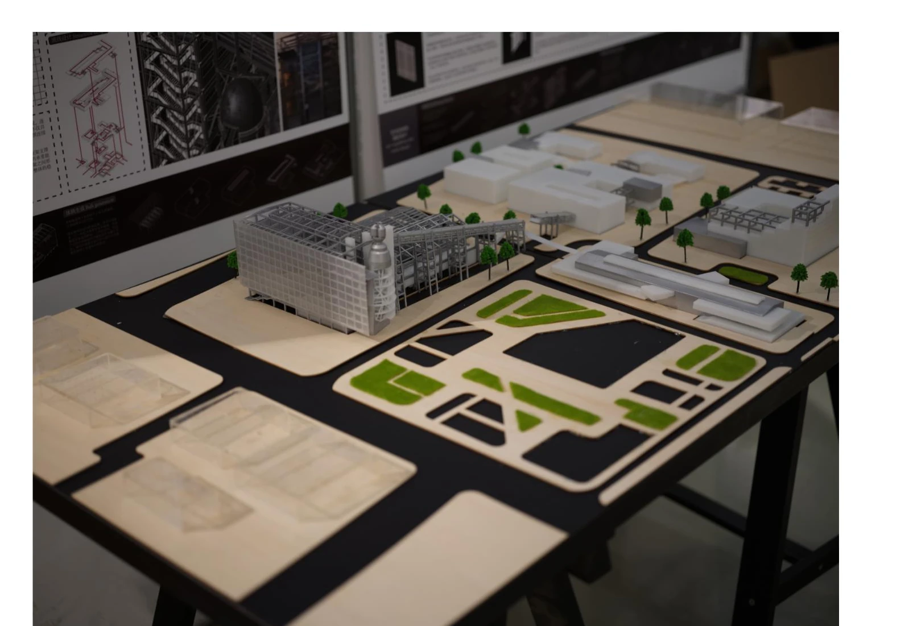
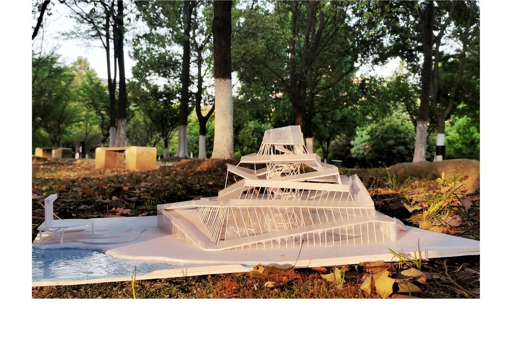
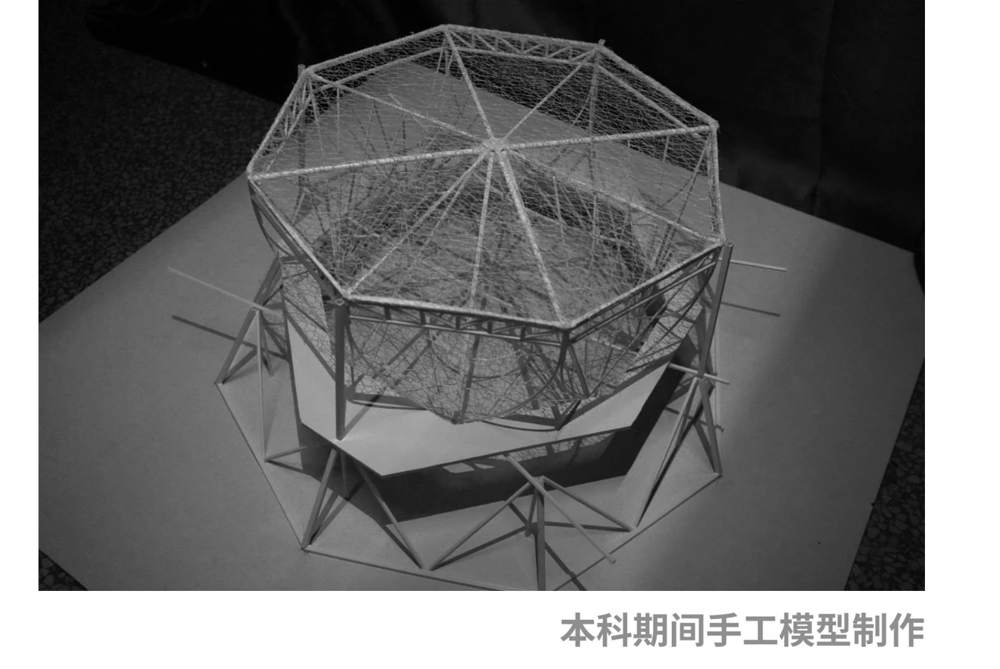
查看章节概览与模型图面
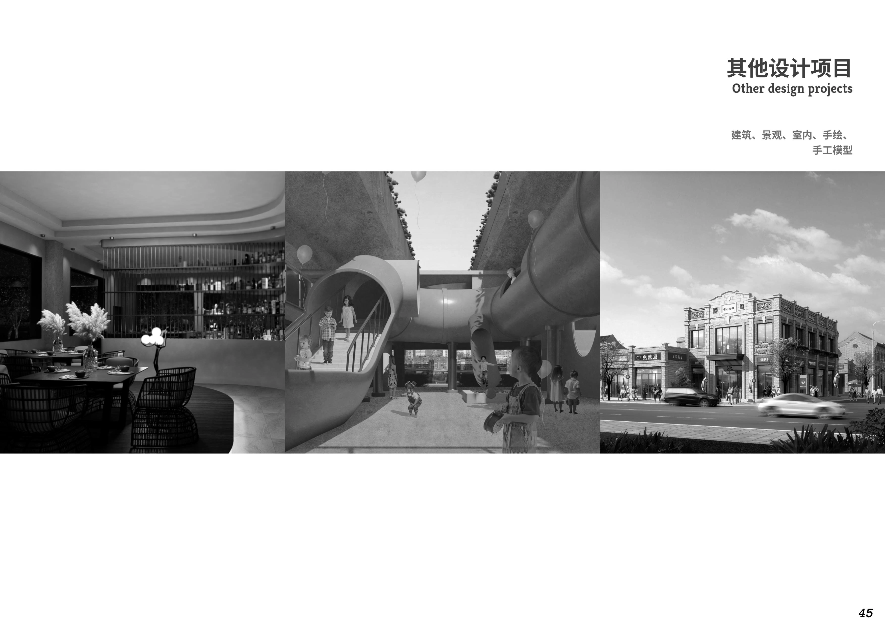
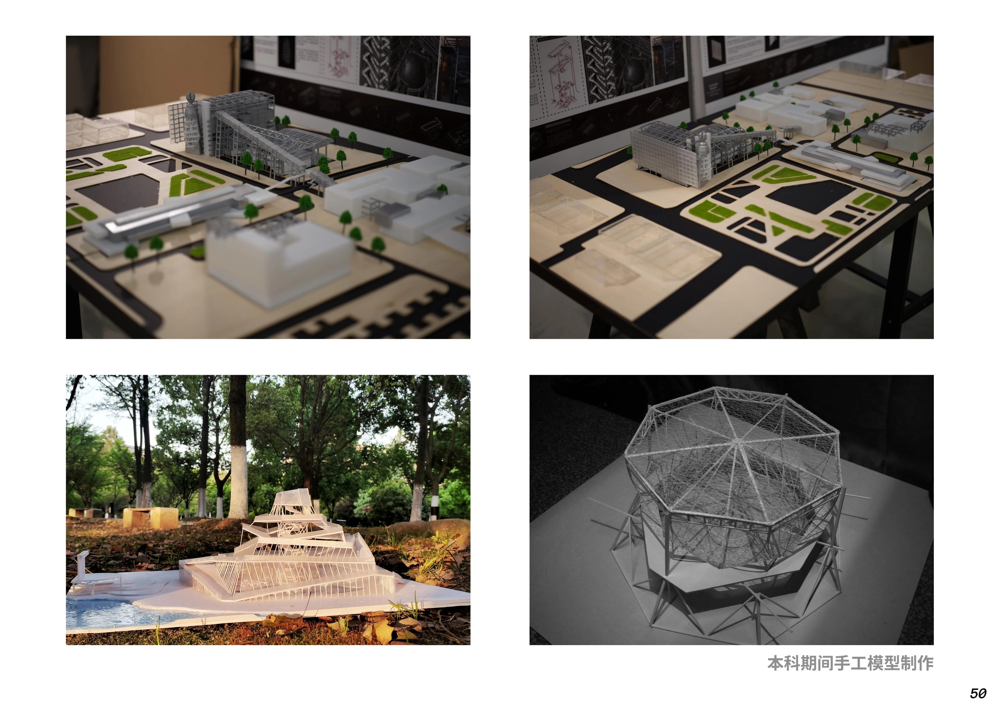
资料来源：《作品集2.27》第6章。图注采用 PDF 实际页序；设计说明依据原图面整理。